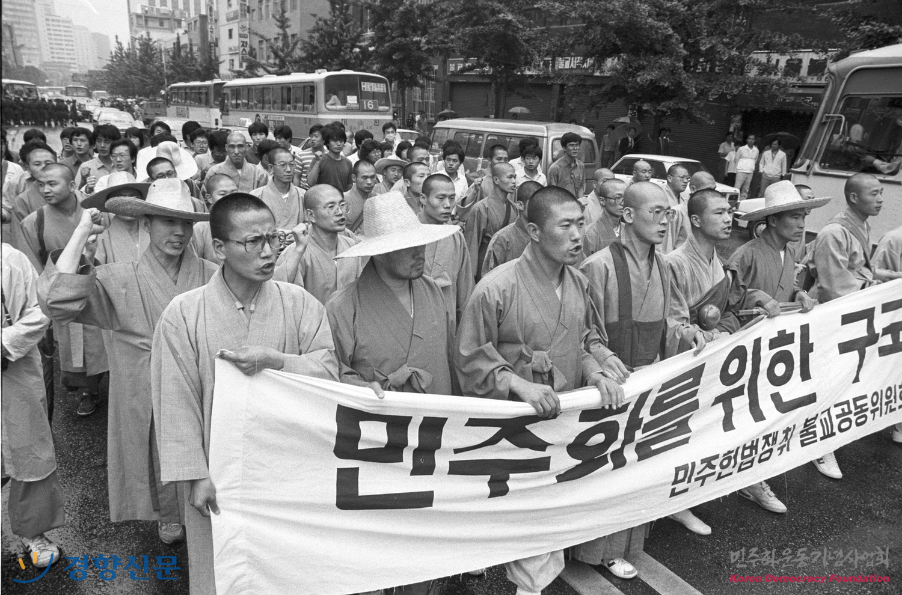

6·10 민주 항쟁, 6월 민주 항쟁(한국 한자: 六月 民主 抗爭, 문화어: 6월인민항쟁), 간단히 6월 항쟁(한국 한자: 六月 抗爭)은 1987년 6월 10일부터 6월 29일까지 대한민국에서 전국적으로 벌어진 반정부 시위이다. 4·13 호헌 조치와 부천경찰서 성고문 사건, 박종철 고문 치사 사건 그리고 이한열 최루탄 피격 사건 등이 도화선이 되어 6월 10일 이후 전국적인 시위가 발생하였고, 이에 6월 29일 노태우의 수습안 발표로 대통령 직선제로의 개헌이 이루어졌다. 이후 1987년 12월 16일 새 헌법에 따른 대통령 선거가 치러졌다. 6월 항쟁은 대한민국의 민주화에 큰 영향을 주었으며, 사회 운동이 비약적으로 상승하는 효과를 가져왔다. 이 항쟁은 한국 도심의 중심 경복궁을 중심으로 동서남북으로 최루탄이 터지며 시작이 되었음을 알려주었다. 이한열을 비롯한 학생들이 최루탄을 맞거나 박종철 열사와 같게 고문으로 죽게 되는 학생들도 몇 있었다.
